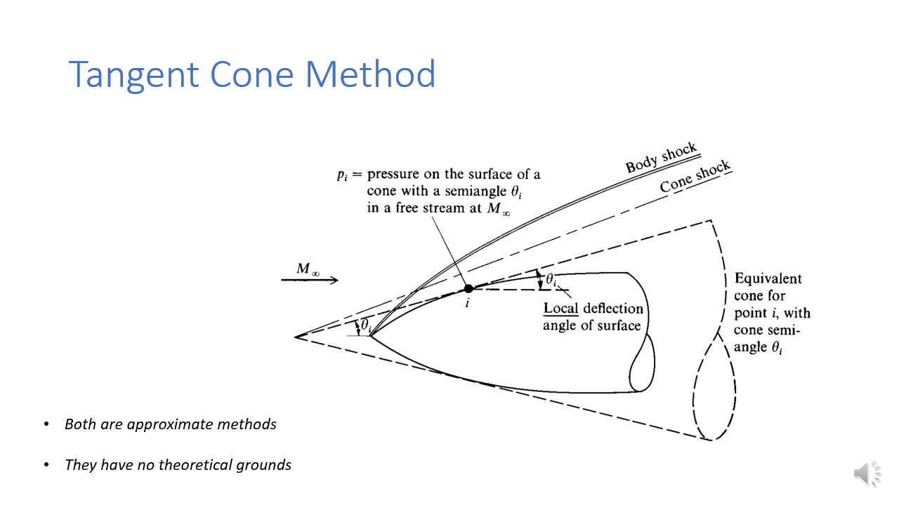
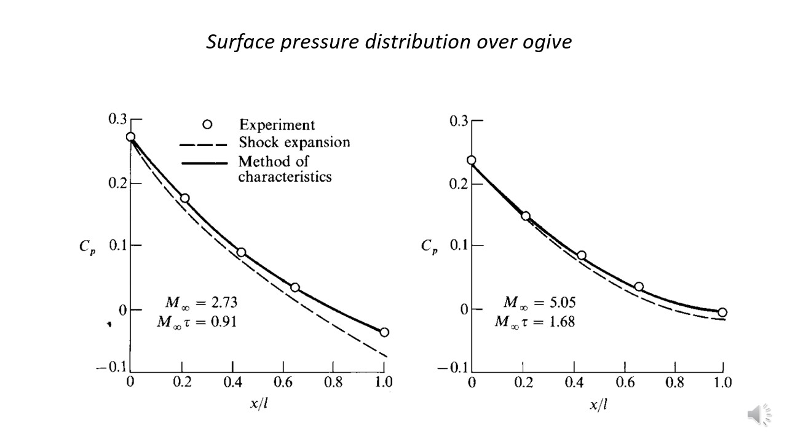

Go Back
Lecture 4
We have discussed about newtonian flow model, and this time we will be discussing about newtonian flow model for predicting surface pressure distribution on hypersoinc bodies.
In this lecture we nwill be discussing some more of these methods.
Tangent Wedge Method

-
This method is used to predict surface pressure for two dimensional bodies in hypersonic.
There are certain condition for this methods to be used. And they are
The nose of body should be pointed
The Local surface inclination angle (\(\theta_{local}\)) measured at any point along the body surface must be less than the maximum delfection angle for oblique shock theory to be applied.
-
If we wish to calcuate the pressure at a point on the body \(I\). Then we will have to draw a tangent line at that point and it will make an angle \(\theta_i\) w.r.t Free Stream Mach Number.
Now let us consider this tangent like to be an imaginary wedge surface. if we wanted to know the pressure at this point using oblique shock theory but on this imaginary wedge.
Tangent Cone Method

-
This method is similar to tangent wedge method just that here the object has to be three dimensional and axisymmetric.
-
Again we want to calculate the pressure at point \(I\) on the surface of the cone this time. As before we will be drawing a line and then we could assume there to be an imaginary wdge, witht he surafce makign angle \(\theta_i\) with the surface.
And we can again apply the oblique shock thoery to calcuate the pressure at that point with \(\theta = \theta_i\).
There are some cone table that could be used to find the pressure.
Both the Cone Tangent methoid and Wedge Tangent methoid are approximate solution method, but both of them give us resonable results. Why?
Silde 4

-
Consider a hypersonic flow over a two dimensional body. We are intersted to predict the pressure at point \(i\) on the body surface. And as discussed we have assumed an imaginary wedge (Equivalent Wedge) which will generate imaginary shock on the body suraface (Wedge Shock). And we already had the Body shock as that's real one.
Now at any point on the body surface the actual body shock angle will be alrger than imaginary wedge shock angle.
-
Now we draw a normal line from point \(i\) that will intersect the wedge shock at \(b\) and Body shock at \(a\).
-
In hypersonic flow it is a well known fact that the y component of velocity changes significantly with x component of velocity. And this can be proven with oblique shock limit and appling mach number tend to infinity.
From the sildes shown above we could see that the velcoity change in x direction will be of theorder \(\theta^2) and that is y direction will be of the order \(\theta\). So thsi says that significant chnage in velocity occurs in y direction than in x direction.
It's an invicid flow, so from pressure velocity relation we could say large change in presure will be occuring in the normal direction
-
The \(P_a\) will domiante \(p_i\). And p_a will be greater than p_i, due to centrifugal effects. Now form tanglent wedge method, the pressure at point i, will be equal to pressure behind wedge shock (p_b). And since \(\beta_{wedge}\ < \beta_{Body}/) we say that strenght of the wedge shock is less than strenght of Body Shock. And this would mean that p_a > p_b
Surface pressure distribution for ogive

Shock Expansion Method

-
This is yet another method to calculate the pressure at different location on the surface of the body. And this uses knowledge of both prandlt meyer expansion fans and shock waves, to calcuate the rpessure at some pint \(I\).
-
This method applies to 2D objects only, and also the nose of body should be pointed to be able to use this method.
-
We will assume that the half angle of wedge at the nose of body is equal to \(\theta_n\). And later the flow flow over it downstream.
And if we observe the flow will trun away from itself, and will expereince prandlt meyer expansion. So we could use prandlt meyer relation to find the mach number at the point \(i\). But before that we will have to know the mach number at nose \(M_n\) and this will be obtained from Normal Shock relation.
Also need not to mention the value of \(\theta_i\) could be found by making a tangent at that point i.
-
And once mach number is known we could make use the isentropic relations (oblique shock theory) and find pressure as well.
Every thing here could be obtained using tables.
Surface pressure distribution over ogive

-
The result obtianed using Shock Explansion Method is compared with experiemental and Method of Characteristics, and is plotted for Supersonic and Hypersonic flows.
The surface pressure distribution is plotted for \(C_p\) at various location on the surface.
-
We see that this method have poor for supersonic flow, and is in good agreement for hypersonic flow. and there is a reason behind it, which will be discussed in the next slide.
Shock Explansion Method

-
Consider a bi-convex airfoil, in supersonic and hypersonic flow. When the body encounters shock waves, along with that the flowwill also encounter mach waves. This mach wave will also
be generated and later get reflected, back at the surface of the airfoil.
-
In case of supersonic flow, the refelcted shock will quickly get reflectted and hit the surface of the airfoil. However in the case of hypersonic flow, the shock wave will be have low shock angle and this will push the relfected shock waves even more down stream.
And wehn using shock expansion method, we do not assume reflected waves generating. And therefore Hypersonic flow will have higher accurcy for Supersonic for Shock-Expansion Method.